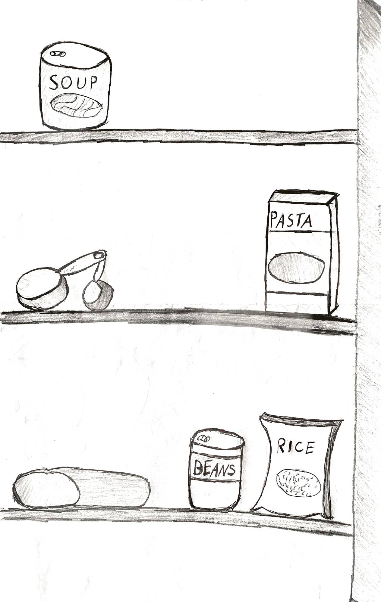

The Pyrex Measuring Cup’s natural environment, or in-situ, showcases a standard kitchen cabinet where one might find the cup.
The cabinet can include many variations of kitchenware, supplies and cooking ingredients depending on the owner’s method of organization.
In this Artivive screenshot, we see the cup can be situated in its natural environment, but can also do so in a novel way. The overlaying of the images allows the cup to be presented in a three-dimensional form, coming toward the viewer, away from the cabinet.